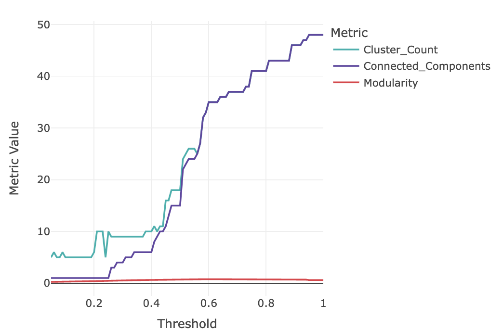
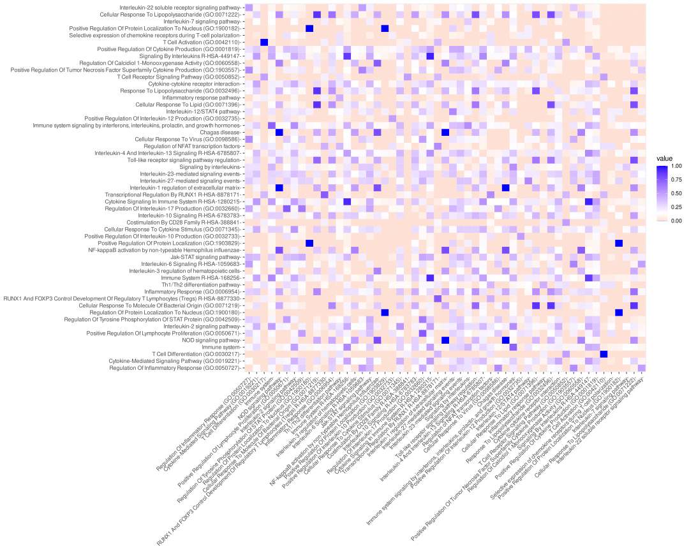
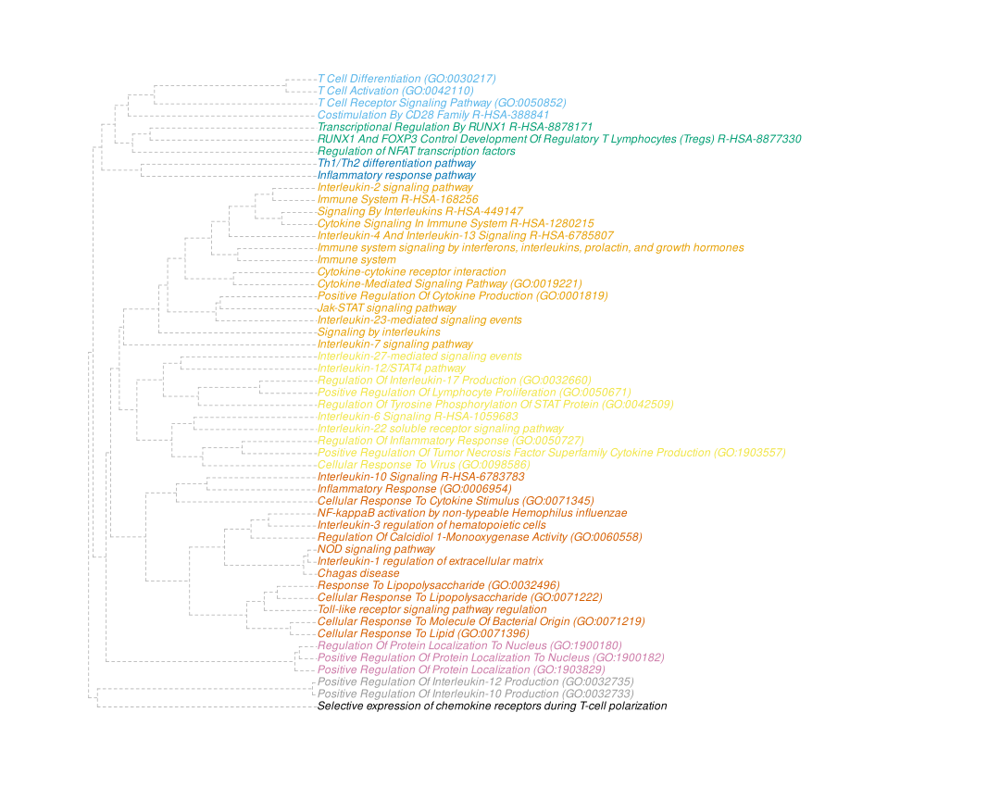
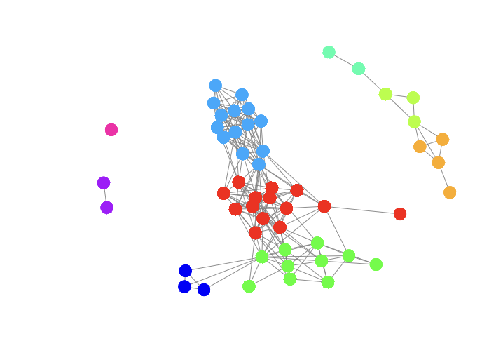
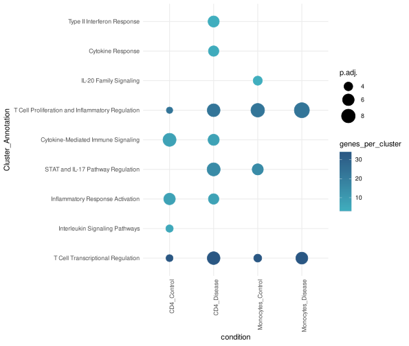

SummArIzeR is an R package, that allows an easy use of EnrichR to compare enrichment results from multiple databases of multiple conditons. It results in a clustering of enriched terms and enables the annotation of these terms by creating a promt for large language models such as gpt4. Results can be vizualised in a Heatmap.
If you are using SummArIzeR for your publication, please cite us:
SummArIzeR: Simplifying cross-database enrichment result clustering and annotation via large language models Marie Brinkmann, Michael Bonelli, Anela Tosevska bioRxiv 2025.05.28.656331; doi: https://doi.org/10.1101/2025.05.28.656331
Features
- Perform enrichment analysis using
enrichR. - Allows analysis of multiple conditions
- Analyze up- and down-regulated genes separately.
- Filter terms by p-value and gene thresholds.
- Calculates similarities of results terms based on included genes
- Clusters terms using random walk algorithm
- Generates a prompt for a LLM to summarized cluster annotations
- Allows easy heatmap visualization
Installation
You can install the development version of SummArIzeR from GitHub with:
# Install devtools if not already installed
install.packages("devtools")
# Install SummArIzeR
devtools::install_github("bonellilab/SummArIzeR")
# Additional packages
# Install factoextra from CRAN
install.packages("factoextra")
# Install `enrichR`
devtools::install_github("wjawaid/enrichR")Example
This is a basic example which shows you how to run SummArIzeR. We create an example dataframe from two celltypes comparing a disease and control group:
library(SummArIzeR)
library(enrichR)
library(factoextra)
set.seed(1234)
genelist_df <- data.frame(
genes = c(
"IL6", "IFNG", "IL10", "TNF", "CXCL8", "STAT3", "STAT1", "JAK1", "JAK2", "SOCS1",
"SOCS3", "IL1B", "IL18", "IL12A", "IL23A", "GATA3", "RORC", "CCR7", "CXCR3", "CCL2",
"CCL5", "IRF4", "IRF5", "IL4R", "IL2", "FOXP3", "TGFB1", "IL7R", "IL15", "NFKB1",
"IL21", "CXCR5", "TYK2", "IL22", "IL17A", "IL17F", "MCP1", "IL1RN", "CXCL10", "CXCL11",
"CD40LG", "IL6R", "IL27", "CD28", "CD80", "CD86", "IL2RA", "CTLA4", "PDCD1"
),
Group = c(
"Disease", "Disease", "Control", "Disease", "Disease", "Disease", "Control", "Control", "Disease", "Control",
"Disease", "Disease", "Control", "Disease", "Disease", "Control", "Disease", "Control", "Disease", "Disease",
"Control", "Disease", "Disease", "Control", "Disease", "Control", "Control", "Control", "Disease", "Disease",
"Disease", "Control", "Control", "Disease", "Disease", "Disease", "Disease", "Control", "Disease", "Disease",
"Disease", "Disease", "Control", "Control", "Control", "Disease", "Control", "Control", "Control"
),
CellType = c(
"CD4", "CD4", "CD4", "Monocytes", "Monocytes", "CD4", "CD4", "Monocytes", "CD4", "Monocytes",
"CD4", "Monocytes", "Monocytes", "CD4", "CD4", "CD4", "CD4", "CD4", "CD4", "Monocytes",
"Monocytes", "CD4", "Monocytes", "CD4", "CD4", "CD4", "Monocytes", "CD4", "Monocytes", "Monocytes",
"CD4", "CD4", "Monocytes", "CD4", "CD4", "CD4", "Monocytes", "Monocytes", "CD4", "CD4",
"CD4", "Monocytes", "CD4", "CD4", "Monocytes", "Monocytes", "CD4", "CD4", "CD4"
),
log2fold = c(1.65922417, 1.74830165, -0.85544186, 1.32179050, 0.56698208, 0.07638380, 0.94635326, -1.46133361, 0.62796916, 0.82025914, -0.16903290, 0.87644901, 1.73868899, -0.97828470, -0.15082871, 1.76005809, 1.91290571, -1.53005055, -0.10001167, 0.24133098, 1.61612555, -1.44515933, 1.95556692, 1.78667293, -1.67024977, 0.05684714, -0.43918613, 1.62295252, -0.21212149, 1.34401704, 0.95038247, 1.24422057, -0.44756687, 0.74067892, -1.98420664, 1.33166432, -1.97066341, -1.16936411, 1.62640563, 0.44711457, -0.48176304, -0.25691366, -1.85027587, 1.89415966, -0.27299500, 1.83030639, 1.55101962, 0.55991508, 1.88386644)
)We can perform the enrichment analysis for the different conditions CellType and Group: Here we extract the top 5 hits from every database and every condition. The input is data.frame with gene-level data. Must include a “genes” column, conditions column, and, optionally, “log2fold” if splitting by regulation. If split_by_reg (default = FALSE) is set to TRUE, enrichment is performed separately on up- and down-regulated genes. The logFC_threshold (default = 0) parameter defines the log fold-change cutoff used to define up/down regulation when split_by_reg = TRUE. The adjusted p-value cutoff is used to filter significant enriched terms. The parameter n (default = 10) shwos the number of top enriched terms to return per condition and per category, whereas the min_genes_threshold (default = 3) is the minimum number of genes required to consider a term in downstream analysis. The enrichment categories can be chosen from the set of libraries available in EnrichR:
Termlist_all<-extractMultipleTerms(genelist_df, condition_col = c("CellType", "Group"), categories = c("GO_Biological_Process_2023","Reactome_2022", "BioPlanet_2019"), pval_threshold = 0.05, n = 5, split_by_reg = T)
head(Termlist_all, n = 5)
#> # A tibble: 5 × 6
#> Term Genes adj_pval dbs condition regulation
#> <chr> <chr> <dbl> <chr> <chr> <chr>
#> 1 Cellular Response To Virus (GO:0098586) IL21 0.0000000346 GO_Biological_P… CD4_Dise… up-regula…
#> 2 Cellular Response To Virus (GO:0098586) CXCL10 0.0000000346 GO_Biological_P… CD4_Dise… up-regula…
#> 3 Cellular Response To Virus (GO:0098586) IL6 0.0000000346 GO_Biological_P… CD4_Dise… up-regula…
#> 4 Cellular Response To Virus (GO:0098586) IFNG 0.0000000346 GO_Biological_P… CD4_Dise… up-regula…
#> 5 Cellular Response To Virus (GO:0098586) JAK2 0.0000000346 GO_Biological_P… CD4_Dise… up-regula…Edges below the similarity treshold (ts) are deleted. The optimal treshold can be validated by checking the number of clusters, the connected terms and the modularity. The threshold value determins which edges between terms (nodes) are retained in the network (those with a distance weight higher than ts). Smaller values include more edges; larger values result in sparser graphs:
evaluateThreshold(Termlist_all)
The network can be interactively visualized, and if needed, the threshold can be readjusted.
plot<-TRUplotIgraph(Termlist_all, ts = 0.3)
#htmltools::tagList(plot)
plot After treshold adjustment, clusters can be assigned to the dataframe and the Prompt can be generated:
Genelist_test_cluster<-returnIgraphCluster(Termlist_all, ts = 0.3)
head(Genelist_test_cluster, n = 5)
#> # A tibble: 5 × 8
#> # Groups: condition, Term, regulation [5]
#> Term adj_pval condition regulation Cluster dbs num_genes_per_term genelist_per_term
#> <chr> <dbl> <chr> <chr> <dbl> <chr> <int> <list>
#> 1 Cellular Respon… 3.46e-8 CD4_Dise… up-regula… 4 GO_B… 5 <chr [5]>
#> 2 Positive Regula… 6.17e-8 CD4_Dise… up-regula… 4 GO_B… 5 <chr [5]>
#> 3 Inflammatory Re… 6.87e-8 CD4_Dise… up-regula… 6 GO_B… 6 <chr [6]>
#> 4 Regulation Of I… 6.87e-8 CD4_Dise… up-regula… 4 GO_B… 6 <chr [6]>
#> 5 Cytokine-Mediat… 8.30e-8 CD4_Dise… up-regula… 1 GO_B… 6 <chr [6]>
generateGPTPrompt(Genelist_test_cluster)
#> Cluster 1:
#> Please find a summary term for the following terms: Cytokine-Mediated Signaling Pathway (GO:0019221), Positive Regulation Of Cytokine Production (GO:0001819), Signaling By Interleukins R-HSA-449147, Cytokine Signaling In Immune System R-HSA-1280215, Interleukin-4 And Interleukin-13 Signaling R-HSA-6785807, Immune System R-HSA-168256, Jak-STAT signaling pathway, Interleukin-23-mediated signaling events, Cytokine-cytokine receptor interaction, Immune system signaling by interferons, interleukins, prolactin, and growth hormones, Signaling by interleukins, Interleukin-2 signaling pathway, Immune system, Interleukin-7 signaling pathway
#>
#> Cluster 2:
#> Please find a summary term for the following terms: T Cell Differentiation (GO:0030217), T Cell Receptor Signaling Pathway (GO:0050852), T Cell Activation (GO:0042110), Costimulation By CD28 Family R-HSA-388841
#>
#> Cluster 3:
#> Please find a summary term for the following terms: Regulation of NFAT transcription factors, RUNX1 And FOXP3 Control Development Of Regulatory T Lymphocytes (Tregs) R-HSA-8877330, Transcriptional Regulation By RUNX1 R-HSA-8878171
#>
#> Cluster 4:
#> Please find a summary term for the following terms: Cellular Response To Virus (GO:0098586), Positive Regulation Of Tumor Necrosis Factor Superfamily Cytokine Production (GO:1903557), Regulation Of Inflammatory Response (GO:0050727), Regulation Of Interleukin-17 Production (GO:0032660), Regulation Of Tyrosine Phosphorylation Of STAT Protein (GO:0042509), Positive Regulation Of Lymphocyte Proliferation (GO:0050671), Interleukin-6 Signaling R-HSA-1059683, Interleukin-27-mediated signaling events, Interleukin-22 soluble receptor signaling pathway, Interleukin-12/STAT4 pathway
#>
#> Cluster 5:
#> Please find a summary term for the following terms: Th1/Th2 differentiation pathway, Inflammatory response pathway
#>
#> Cluster 6:
#> Please find a summary term for the following terms: Inflammatory Response (GO:0006954), Response To Lipopolysaccharide (GO:0032496), Cellular Response To Lipid (GO:0071396), Cellular Response To Molecule Of Bacterial Origin (GO:0071219), Cellular Response To Lipopolysaccharide (GO:0071222), Cellular Response To Cytokine Stimulus (GO:0071345), Interleukin-10 Signaling R-HSA-6783783, Toll-like receptor signaling pathway regulation, Regulation Of Calcidiol 1-Monooxygenase Activity (GO:0060558), Interleukin-3 regulation of hematopoietic cells, NOD signaling pathway, Chagas disease, Interleukin-1 regulation of extracellular matrix, NF-kappaB activation by non-typeable Hemophilus influenzae
#>
#> Cluster 7:
#> Please find a summary term for the following terms: Regulation Of Protein Localization To Nucleus (GO:1900180), Positive Regulation Of Protein Localization To Nucleus (GO:1900182), Positive Regulation Of Protein Localization (GO:1903829)
#>
#> Cluster 8:
#> Please find a summary term for the following terms: Positive Regulation Of Interleukin-10 Production (GO:0032733), Positive Regulation Of Interleukin-12 Production (GO:0032735)
#>
#> Cluster 9:
#> Please find a summary term for the following terms: Selective expression of chemokine receptors during T-cell polarization
#>
#> Please summarize the following clusters of terms with a single term for each cluster.
#> Then, assign the cluster numbers to these summary terms in an R vector, called `cluster_summary`, formatted as:
#> '1' = 'Summary Term 1', '2' = 'Summary Term 2', ..., 'n' = 'Summary Term n'.The prompt can be queried using a LLM like ChatGPT. The result can be copied into R. Now, a final data frame containing the cluster annotations can be created:
#Enter vector from LLM
cluster_summary <- c(
'1' = 'T Cell Transcriptional Regulation',
'2' = 'Interleukin Signaling Pathways',
'3' = 'Inflammatory Response Activation',
'4' = 'STAT and IL-17 Pathway Regulation',
'5' = 'Cytokine-Mediated Immune Signaling',
'6' = 'T Cell Proliferation and Inflammatory Regulation',
'7' = 'IL-20 Family Signaling',
'8' = 'Cytokine Response',
'9' = 'Type II Interferon Response',
'10' = 'Antiviral Cellular Response',
'11' = 'Chemokine Signaling',
'12' = 'Negative Regulation of Organismal Processes',
'13' = 'Th17 Cell Differentiation',
'14' = 'Th1/Th2 Cell Differentiation'
)
print(cluster_summary)
#> 1
#> "T Cell Transcriptional Regulation"
#> 2
#> "Interleukin Signaling Pathways"
#> 3
#> "Inflammatory Response Activation"
#> 4
#> "STAT and IL-17 Pathway Regulation"
#> 5
#> "Cytokine-Mediated Immune Signaling"
#> 6
#> "T Cell Proliferation and Inflammatory Regulation"
#> 7
#> "IL-20 Family Signaling"
#> 8
#> "Cytokine Response"
#> 9
#> "Type II Interferon Response"
#> 10
#> "Antiviral Cellular Response"
#> 11
#> "Chemokine Signaling"
#> 12
#> "Negative Regulation of Organismal Processes"
#> 13
#> "Th17 Cell Differentiation"
#> 14
#> "Th1/Th2 Cell Differentiation"The clusters can now be annotated based on the vectors defined above. Here, one could specify different methods for pooling p-values resulting from multiple terms. In addition, this pooled p-value is capped at a min_pval (default = 1e-10), making it better suitable for plotting. However, users can select a lower min_pval threshold.
Annotation_list<- annotateClusters(Genelist_test_cluster, cluster_summary)
#> Warning: There were 11 warnings in `dplyr::mutate()`.
#> The first warning was:
#> ℹ In argument: `pval_pooled = poolPValues(adj_pval, method = method, weights = weights, min_pval =
#> min_pval)`.
#> ℹ In group 1: `condition = "CD4_Control"` `Cluster = 1`.
#> Caused by warning in `poolPValues()`:
#> ! Pooled p-value capped to minimum threshold: 1.0e-10
#> ℹ Run `dplyr::last_dplyr_warnings()` to see the 10 remaining warnings.The results can be plotted as a Bubbleplot. If the enrichment was done for up-and downregulation seperatly, the plot will be split for up-and downregulated genes.
plotBubbleplot(Annotation_list)
Additionally, the results can be plotted as a Heatmap. If the enrichment was done for up-and downregulation seperatly, the Heatmap can be split for up-and downregulated genes. The heatmap can be further customized by setting cluster_rows/columns to TRUE.
#plotHeatmap(Annotation_list, rot = 90, annotation_bar = F, column_names_centered = F)If you encounter any errors or issues, or if you have a suggestion please file an issue here.